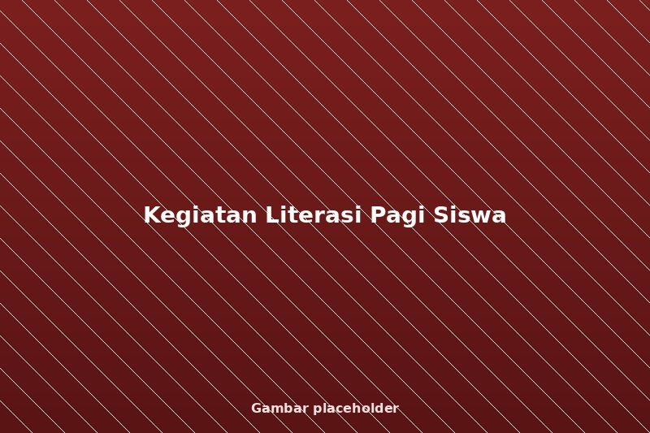
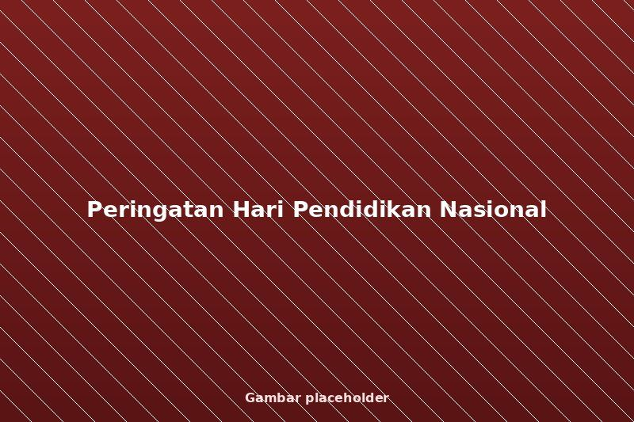
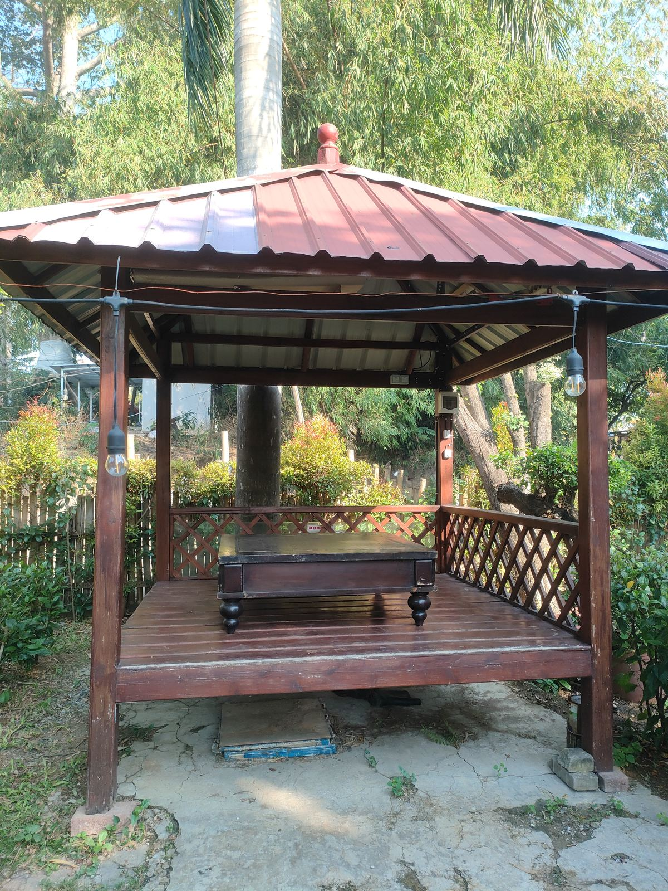
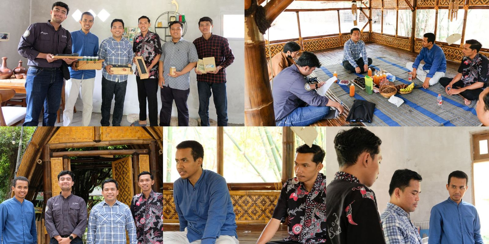
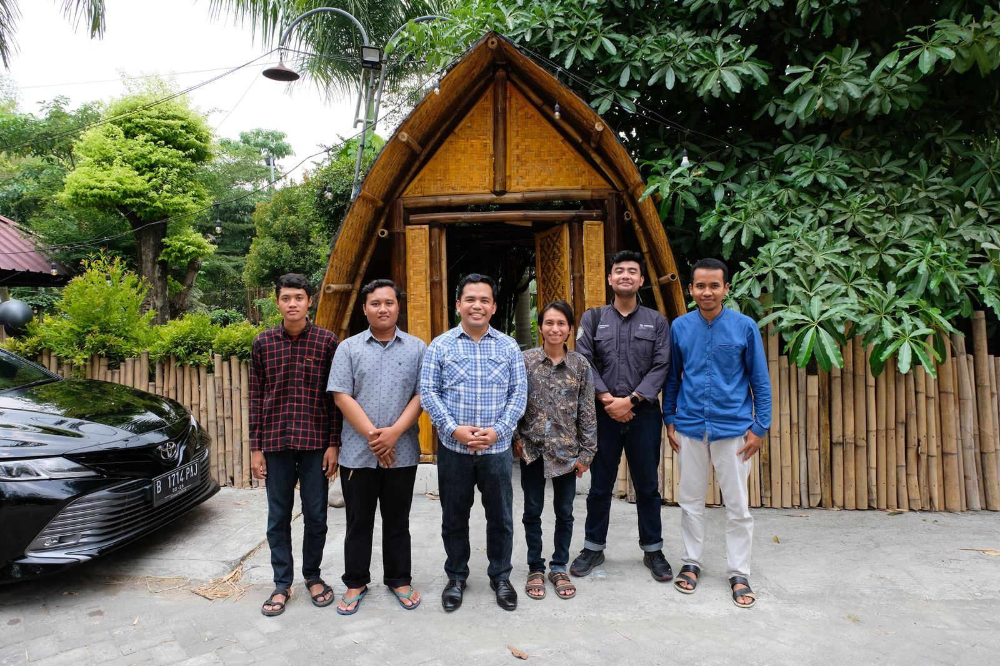
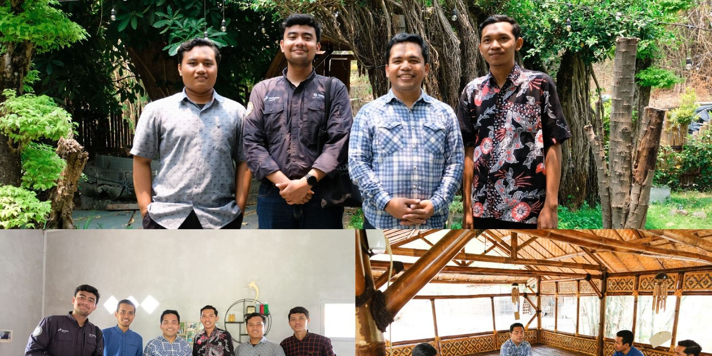
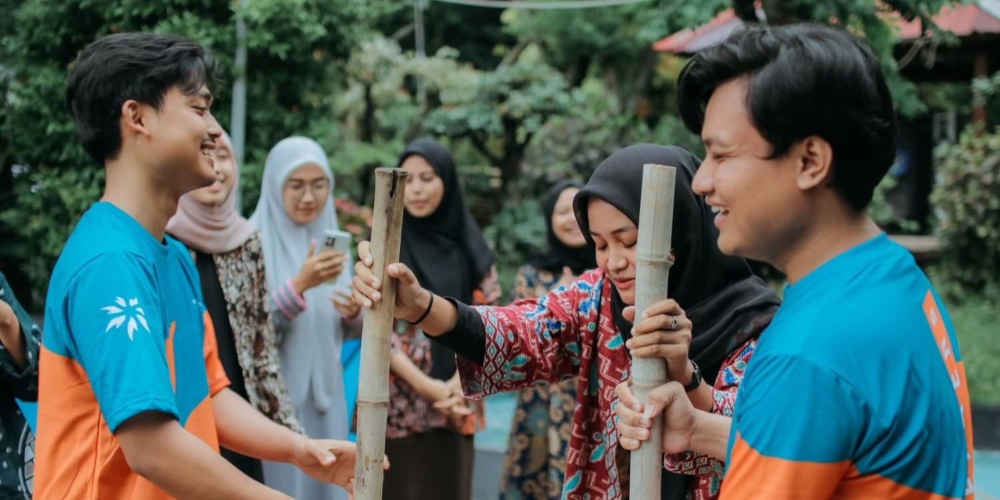

Kegiatan Sekolah
Kegiatan Literasi Pagi Siswa
Kegiatan literasi rutin untuk meningkatkan minat baca siswa.
Baca Selengkapnya →
Informasi terbaru seputar kegiatan, prestasi, dan pengumuman resmi sekolah.
Informasi resmi seputar kegiatan, kebijakan, dan program strategis yayasan sebagai bentuk transparansi kepada publik.

Kegiatan literasi rutin untuk meningkatkan minat baca siswa.
Baca Selengkapnya →
Siswa SDN Balas Klumprik meraih juara tingkat kecamatan.
Baca Selengkapnya →
Upacara dan kegiatan edukatif memperingati Hardiknas.
Baca Selengkapnya →Dokumentasi kunjungan, kolaborasi, dan kegiatan strategis yayasan.

Video dokumentasi kegiatan dan publikasi resmi yayasan.
Video kedua akan segera ditambahkan.
Yayasan menerima berbagai kunjungan resmi dari pemerintah pusat, daerah, serta pemangku kebijakan sebagai bentuk dialog, evaluasi, dan dukungan terhadap pengembangan pendidikan.

Dialog kebijakan dan dukungan terhadap penguatan ekosistem pendidikan.

Apresiasi dan evaluasi program pendidikan tingkat daerah.

Sinergi pemerintah daerah dalam peningkatan mutu pendidikan.
Yayasan menjalin kerja sama dengan perguruan tinggi, lembaga pendidikan, dan mitra profesional untuk mendukung pengembangan mutu akademik, penelitian, dan pengabdian masyarakat.
Kolaborasi ini membuka akses pembelajaran lintas institusi serta memperluas wawasan peserta didik dan pendidik.


Jejak lulusan menjadi indikator keberhasilan pembinaan yayasan dalam membentuk sumber daya manusia yang berkarakter, berdaya saing, dan berkontribusi nyata bagi masyarakat.
Alumni melanjutkan studi ke jenjang pendidikan menengah, tinggi, dan pelatihan profesional sesuai minat dan potensi.
Lulusan berperan aktif dalam kegiatan sosial, komunitas, dan pengabdian masyarakat di lingkungannya.
Alumni dibekali kemampuan berpikir kritis, komunikasi efektif, dan karakter tangguh menghadapi dinamika perubahan zaman.
Rekam jejak lulusan dan program yayasan menjadi dasar kepercayaan pemerintah, institusi pendidikan, komunitas, dan mitra strategis dalam membangun kolaborasi berkelanjutan untuk pendidikan yang inklusif dan berdampak luas.